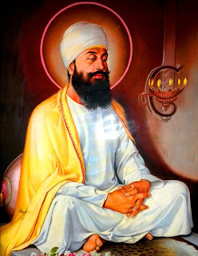
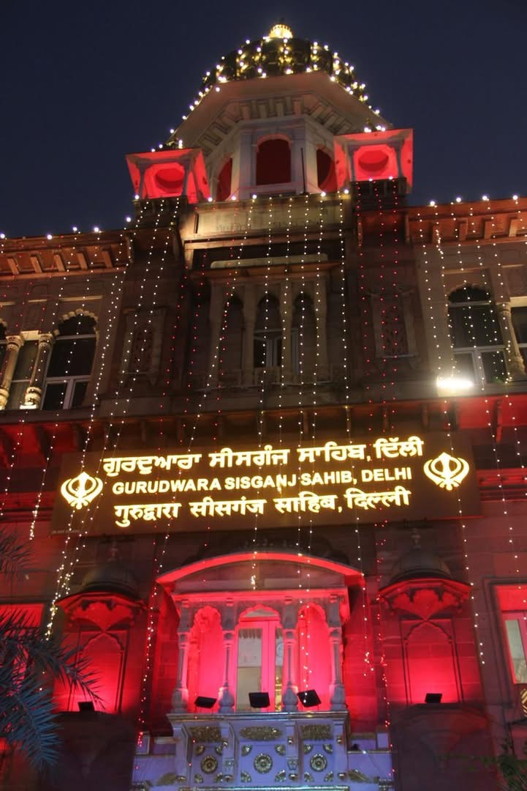

Prakash Purab of Guru Nanak Dev Ji
Birth of the first Guru, Sri Guru Nanak Dev Ji, at Rai Bhoi Ki Talwandi — now Nankana Sahib — in 1469. Note that this is the one Gurpurab the 2003 Nanakshahi calendar left on the lunar Kattak Puranmashi, so the day the Panth observes it moves from year to year, usually falling in mid-November.
8 November (23 Maghar in the Nanakshahi calendar) brings together six moments of Sikh history, from 1469 to 1983. The main event of the day is from 1469: Prakash Purab of Guru Nanak Dev Ji. Together they span six periods, from The early Gurus (1469–1605) to From the Anandpur Sahib Resolution to 1984 (1967–1984). People, places and movements connected with this day include Guru Nanak Dev Ji, Nankana Sahib and the Saka of 1921, Guru Tegh Bahadur Ji and Mughal rulers and governors.

Also on this day
- 1665Guru Tegh Bahadhur was arrested and taken to Delhi The acceptance of Guruship by Guru Tegh Bahadhur without obtaining the approval of the imperial government at Delhi was considered an affront to Aurangzeb. he deputed Alam Khan Rohilla to take the Guru into custody, and bring him to his presence. Alam Khan and his escort showed themselves up in Dhamdhan when Guru Sahib was in the deep forest on a hunting expedition. Guru Tegh Bahadhur and his entourage were rounded up and taken to Delhi. This is the only time Guru Sahib met Aurangzeb. Aurangzeb asked Guru Sahib to show miracles or be ready to be put to death. Guru Sahib refused the first option as display of miracles is discouraged in Sikhism and considered arrogance while competing with God. As a result Aurangzeb ordered the execution of Guru Sahib. But the intervention of Raja Ram Singh, son of Raja Jai Singh, made Aurangzeb to relent, and order instead the detention of Guru Sahib and his entourage under his care. They were released on December 16, 1665.
- 1899"Khalsa Samachar", a weekly punjabi newsletter, was started by Vir Singh
- 1921First Akali Conspiracy case initiated Case lasted until May 8, 1922, Presiding Magistrate was P.J. Rust. Babbars involved included :-
- 1927Formation of the Simon Commission announced
- 1983Sikhs of Yamuna Nagar were attacked by fundamentalist Hindus
Historical background
The early Gurus (1469–1605)
Guru Nanak Dev Ji (1469–1539) founded the Sikh faith, travelled widely and settled the first Sikh community at Kartarpur. His successors built its institutions: Guru Angad Dev Ji standardised the Gurmukhi script, Guru Amar Das Ji organised the sangat into manjis and made langar central, Guru Ram Das Ji founded the town of Ramdaspur (Amritsar), and Guru Arjan Dev Ji built Sri Harmandir Sahib and compiled the Adi Granth in 1604.
On this day in this period: 1469 Prakash Purab of Guru Nanak Dev Ji.
Miri-Piri and the middle Gurus (1606–1674)
After the martyrdom of Guru Arjan Dev Ji in 1606, Guru Hargobind Sahib Ji wore two swords of miri and piri (temporal and spiritual authority), established the Akal Takht and fought several engagements with Mughal forces. The seventh and eighth Gurus, Guru Har Rai Ji and Guru Har Krishan Ji, led the community from Kiratpur and Delhi, and Guru Tegh Bahadur Ji founded Anandpur (Chak Nanaki) in 1665.
On this day in this period: 1665 Guru Tegh Bahadhur was arrested and taken to Delhi.
Colonial Punjab and the Singh Sabha revival (1850–1919)
Under British rule Sikhs were recruited in large numbers into the army while new reform movements arose: the Namdhari (Kuka) movement, the Singh Sabha movement founded at Amritsar in 1873, the Chief Khalsa Diwan (1902), Khalsa College and the Anand Marriage Act (1909). The period ended with the Ghadar movement, the Komagata Maru episode (1914) and the Jallianwala Bagh massacre of 13 April 1919.
On this day in this period: 1899 "Khalsa Samachar", a weekly punjabi newsletter, was started by Vir Singh.
The Gurdwara Reform (Akali) movement (1920–1925)
Sikhs organised the Shiromani Gurdwara Parbandhak Committee (November 1920) and the Shiromani Akali Dal (December 1920) to free historic gurdwaras from hereditary mahants backed by the government. Through non-violent morchas, including Nankana Sahib (1921), the keys agitation (1921–22), Guru ka Bagh (1922) and Jaito (1923–25), and alongside the militant Babbar Akali movement, the campaign led to the Sikh Gurdwaras Act of 1925.
On this day in this period: 1921 First Akali Conspiracy case initiated.
Late colonial Punjab and Partition (1926–1947)
With the SGPC established by law, Sikh politics was led by the Akali Dal under figures such as Master Tara Singh and Baba Kharak Singh. Sikhs took part in the freedom movement and in both World Wars, and the Partition of Punjab in August 1947 divided the Sikh homeland, leaving Nankana Sahib and many historic shrines in Pakistan and uprooting millions of Sikhs.
On this day in this period: 1927 Formation of the Simon Commission announced.
From the Anandpur Sahib Resolution to 1984 (1967–1984)
The Akali Dal adopted the Anandpur Sahib Resolution in 1973 and launched the Dharam Yudh Morcha in 1982 over river waters, Chandigarh and greater state autonomy. Tensions culminated in Operation Blue Star, the Indian Army's assault on the Darbar Sahib complex in June 1984, the assassination of Prime Minister Indira Gandhi on 31 October 1984 and the anti-Sikh violence in Delhi and elsewhere that followed.
On this day in this period: 1983 Sikhs of Yamuna Nagar were attacked by fundamentalist Hindus.
People and places of this day
Guru Nanak Dev Ji
The founder of Sikhism (1469–1539), born at Rai Bhoi di Talwandi, now Nankana Sahib. He taught devotion to one Creator, honest work and sharing, travelled across South Asia and beyond on his udasis, and spent his last years at Kartarpur on the Ravi.
Read more → · Mentioned on 20 other days of the year
Nankana Sahib and the Saka of 1921
Nankana Sahib, near Lahore, is the birthplace of Guru Nanak Dev Ji. On 20 February 1921 over a hundred Sikhs of a peaceful jatha led by Bhai Lachhman Singh Dharowalia were killed at Gurdwara Janam Asthan by men of Mahant Narain Das, one of the defining events of the Gurdwara Reform movement. Since 1947 it lies in Pakistan.
Mentioned on 13 other days of the year

Guru Tegh Bahadur Ji
The ninth Guru (1621–1675), recognised at Bakala by the trader Makhan Shah Lubana. He founded Anandpur, travelled as far as Assam, and was executed in Chandni Chowk, Delhi, in 1675 for defending religious freedom; Gurdwara Sis Ganj Sahib marks the spot.
Read more → · Mentioned on 34 other days of the year
Mughal rulers and governors
The Mughal emperors Jahangir and Aurangzeb ordered the executions of Guru Arjan Dev Ji and Guru Tegh Bahadur Ji, and Aurangzeb's successors and the governors of Lahore and Sirhind, among them Wazir Khan, Zakariya Khan and Mir Mannu, led the long campaign against the Sikhs between 1704 and the 1750s.
Mentioned on 34 other days of the year

Delhi
The Mughal capital, where Guru Har Krishan Ji died (Gurdwara Bangla Sahib), Guru Tegh Bahadur Ji was executed (Gurdwara Sis Ganj Sahib) and Banda Singh Bahadur was put to death in 1716. Baghel Singh's forces entered the city in 1783 and marked its Sikh sites.
Read more → · Mentioned on 52 other days of the year
The Akali movement and its morchas
The Gurdwara Reform movement of 1920–1925, in which jathas of Akali volunteers non-violently took control of historic gurdwaras from mahants. Its campaigns included the keys morcha, Guru ka Bagh and Jaito; tens of thousands were arrested and hundreds killed or injured before the Sikh Gurdwaras Act of 1925. The Shiromani Akali Dal has remained the main Sikh political party.
Mentioned on 156 other days of the year
The Babbar Akalis
A militant group of 1921–1925 in the Doaba region, led by figures such as Kishan Singh Gargaj, who rejected the Akalis' non-violence and targeted officials and informers. Several of its leaders were hanged in 1926; the SGPC disowned its methods in 1923.
Mentioned on 64 other days of the year
Related days in Sikh history
Sources and further reading
- Gurpurab date: the Nanakshahi calendar as observed by the Sikh Panth.
- Teja Singh and Ganda Singh, A Short History of the Sikhs, vol. 1 (1469–1765), Orient Longmans, 1950.
- N. Gerald Barrier, The Sikhs and their Literature, Manohar, 1970; Harjot Oberoi, The Construction of Religious Boundaries, Oxford University Press, 1994.
- Mohinder Singh, The Akali Movement, Macmillan, 1978; Teja Singh, The Gurdwara Reform Movement and the Sikh Awakening, 1922.
- Mark Tully and Satish Jacob, Amritsar: Mrs Gandhi's Last Battle, Jonathan Cape, 1985; Harjinder Singh Dilgeer, The Akal Takht, Sikh University Press, 1980.
- Harbans Singh (ed.), The Encyclopaedia of Sikhism, 4 vols, Punjabi University, Patiala, 1992–1998.
- Khushwant Singh, A History of the Sikhs, 2 vols, Oxford University Press, 1963–1966 (2nd ed. 2004).
- J. S. Grewal, The Sikhs of the Punjab, The New Cambridge History of India, Cambridge University Press, 1990 (rev. 1998).
Background sections are written by SikhsInIndia.com from the works listed. Dates in Sikh history sometimes differ between sources and between the Nanakshahi and older Bikrami calendars. To suggest a correction, write to sikhsinindia@gmail.com.